CI/CD pipeline using Jenkins
 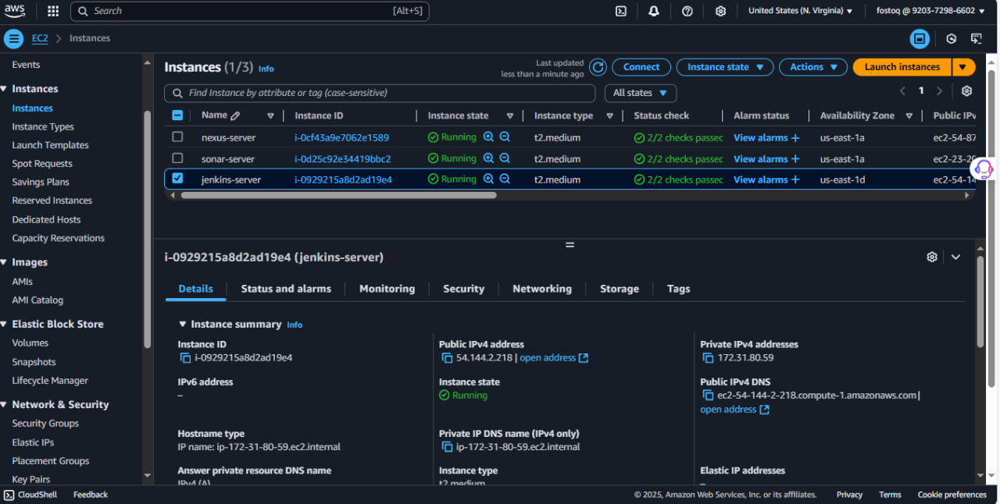
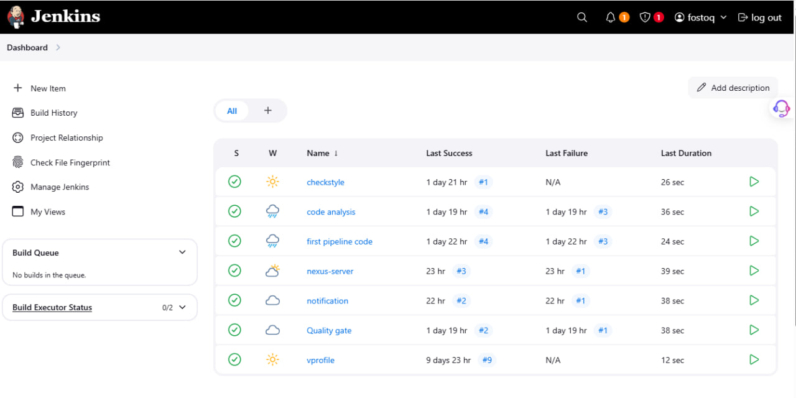
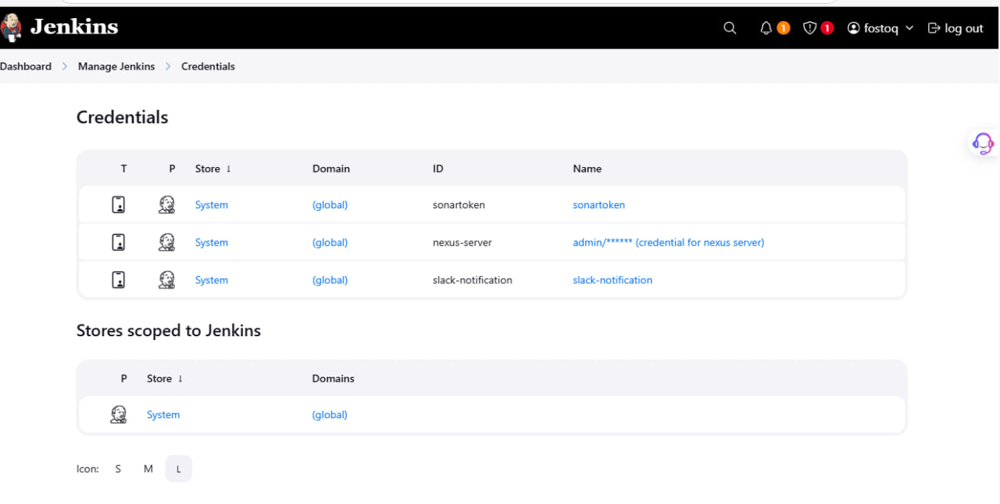
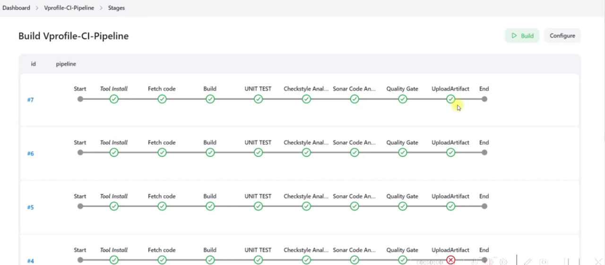
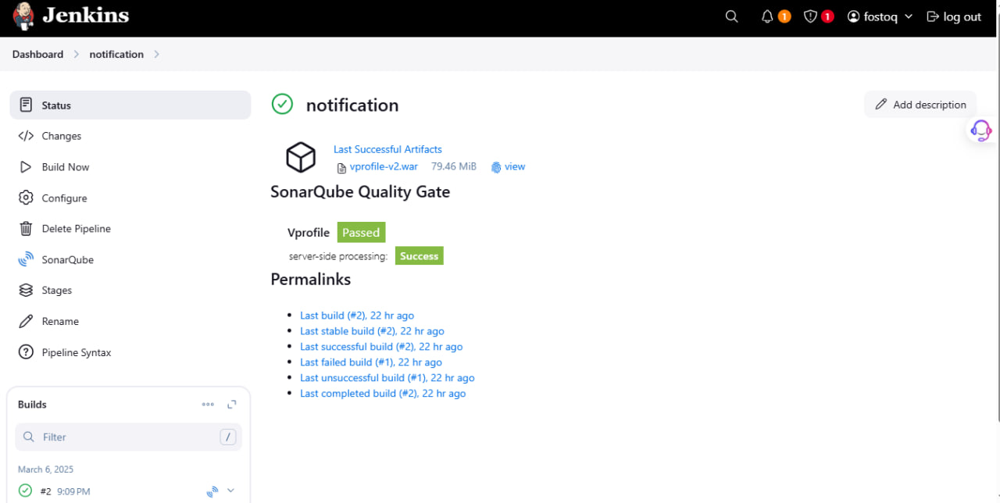
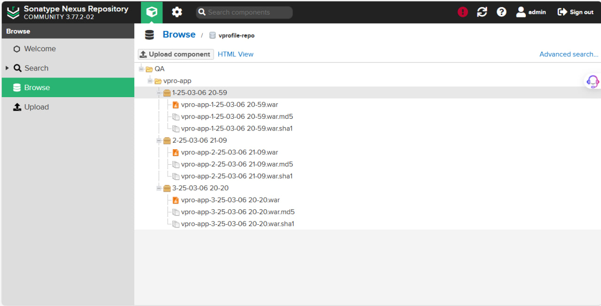
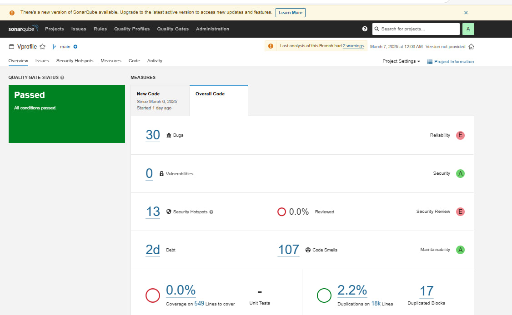
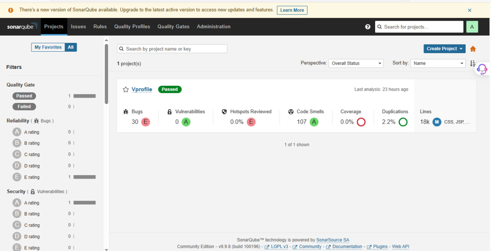
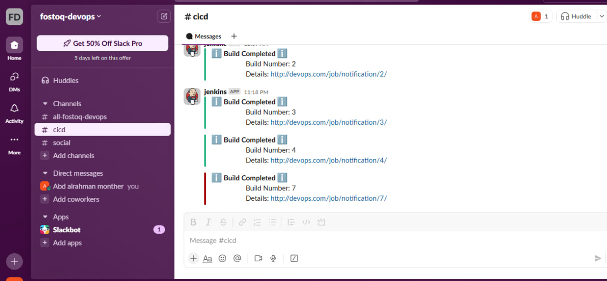
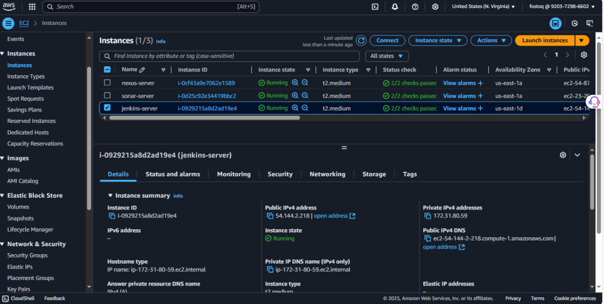
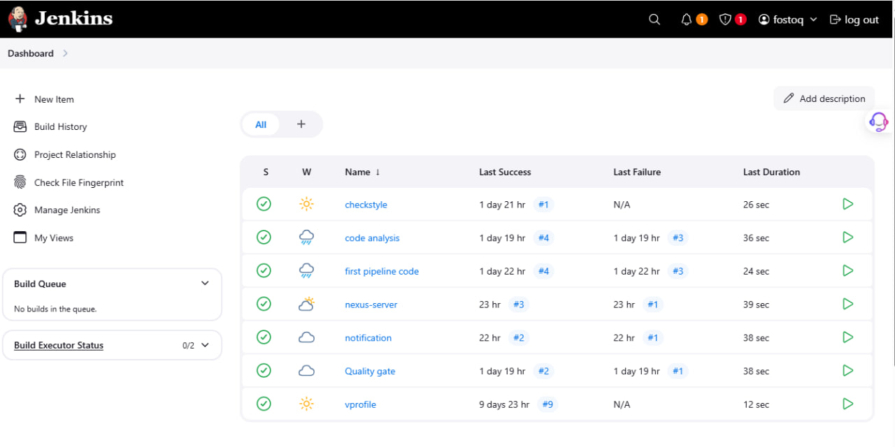
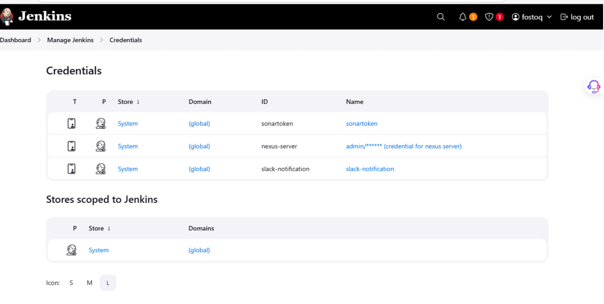
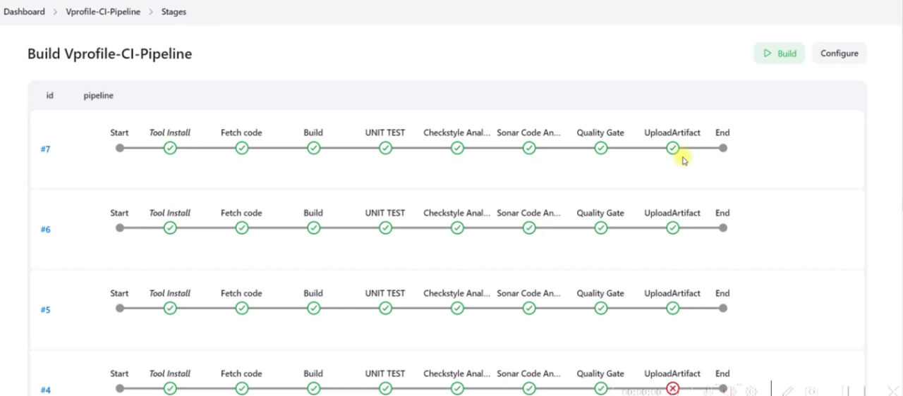
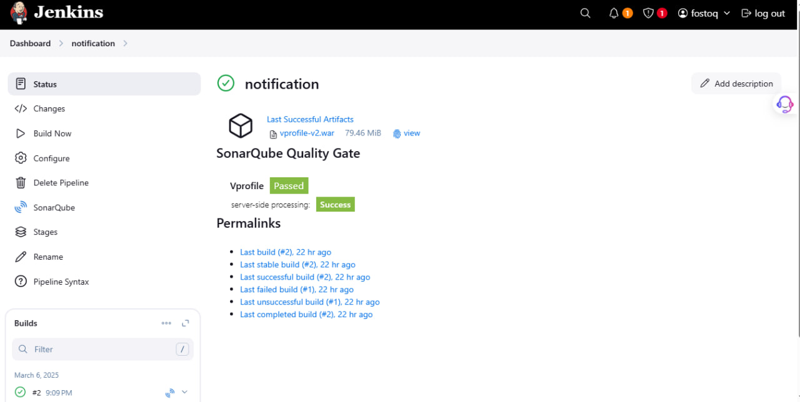
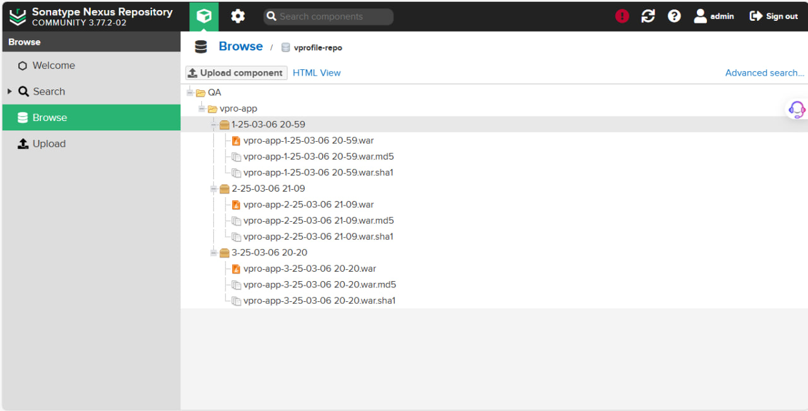
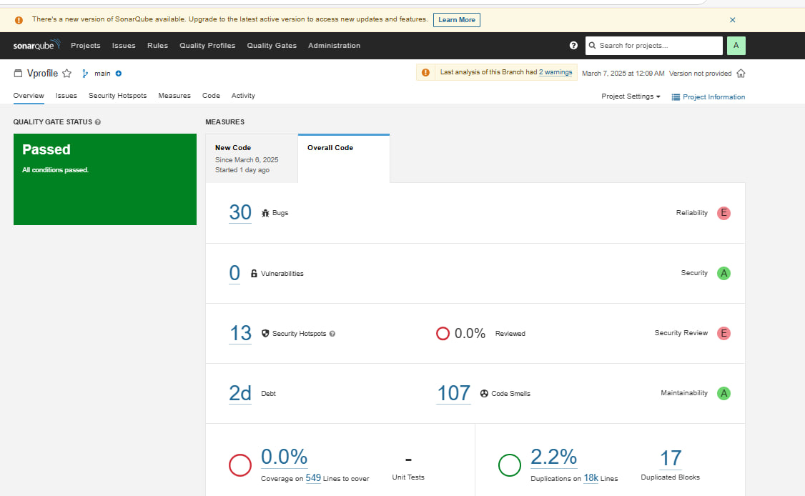
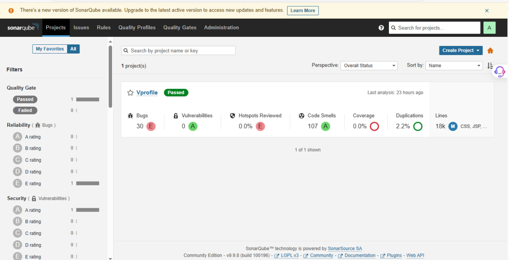
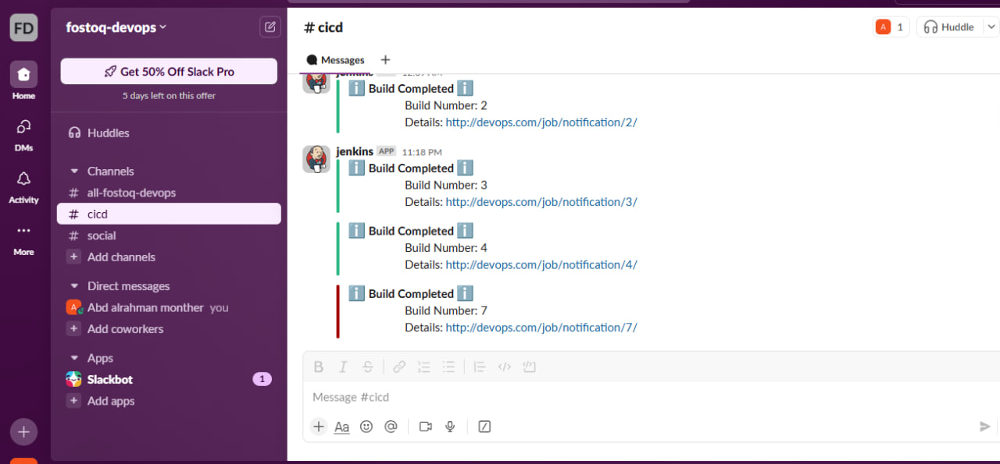
Project Overview
Implemented a full CI/CD pipeline using Jenkins, enabling automated build, test, code analysis, and artifact deployment for Java-based applications. The pipeline integrates tools such as GitHub, Maven, SonarQube, and Nexus OSS to ensure code quality and efficient delivery. This project simulates a real-world DevOps workflow that automates every stage from code commit to deployment-ready artifacts.
Features
- Based on cloud - all servers built on EC2 instance.
- Automated Code Integration – Fetches code from GitHub.
- Build & Test Automation – Uses Maven for building and unit testing.
- Code Quality Analysis – SonarQube integration with quality gates.
- Artifact Management – Stores builds in Nexus OSS.
- Scalability & Flexibility – Multi-user support with configurations.
- Automated Notifications – Email alerts for pipeline status.
Technologies
- jenkins
- AWS
- sonarQupe
- nexus OSS
- slack notification